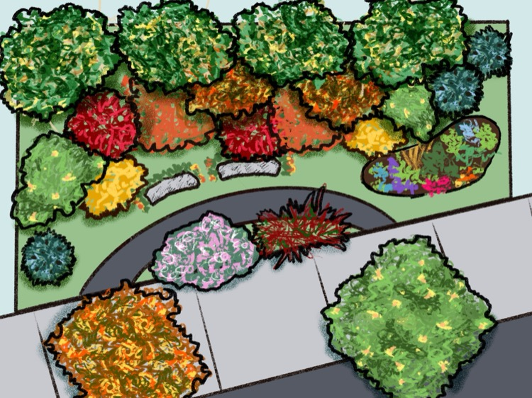
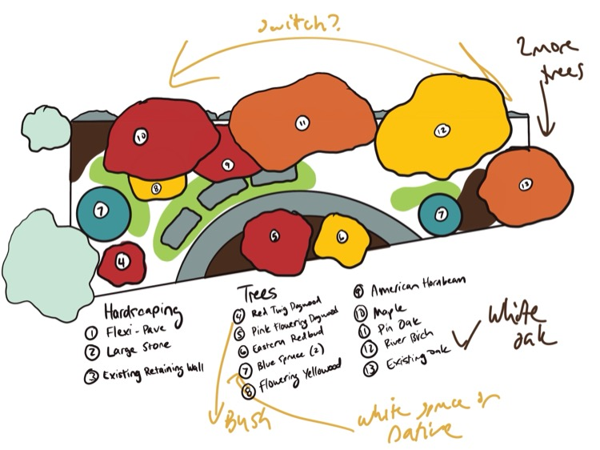
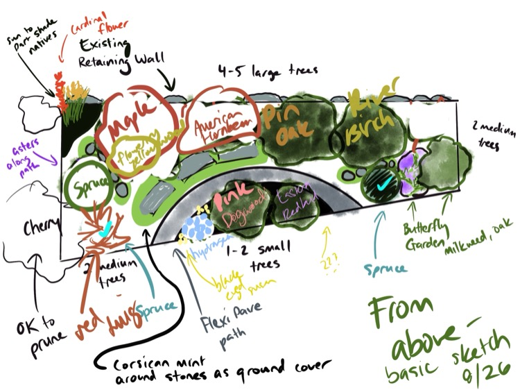

Milestones
From a vacant city-owned lot to Malden’s first pocket forest — here’s how we got here.
Official opening of the Forestdale Pocket Forest
The pocket forest on Goodwin Avenue was officially opened and celebrated with the community. The installation is the first of its kind in Massachusetts to use an Environmental and Energy Affairs grant from the state’s Department of Conservation and Recreation. Mayor Gary Christenson, State Representative Kate Lipper Garabedian, and Ward 5 Councillor Ari Taylor joined neighbors and volunteers to mark the occasion.
The project was initiated by resident Ashley Kolodziej, who sought to transform an unused municipal parcel near her home. Community members Jessica Fujimora and Lauren Albert joined the effort alongside Ward 5 Councillor Ari Taylor and Tree Warden Chris Rosa, whose expertise helped shape the planting plan.
Final design & trees planted
The design reached its final form and the new trees went in the ground. The completed plan brought together everything developed over months of community input, site measurements, and planting research — a layered pocket forest with a curved FlexiPave path, native trees and shrubs, seasonal flowering plants, and groundcover throughout. Seeing the trees planted marked the transition from planning to reality.

Second pocket forest sketch
A more detailed numbered plan refined the design, introducing new species and formalizing the hardscaping layout. Hardscaping elements were called out explicitly: Flexi-Pave path, large stones, and the existing retaining wall. The tree list evolved to include Red Twig Dogwood, Pink Flowering Dogwood, Eastern Redbud, Blue Spruce, Flowering Yellowwood, American Hornbeam, Maple, Pin Oak, River Birch, and the existing Oak — with White Oak noted as a possibility. The sketch also flagged areas for further consideration, including a layout switch and additional tree placements.

First pocket forest sketch
The first overhead sketch of the pocket forest design was drawn, mapping out tree placements, groundcover, the FlexiPave path, and planting zones. The sketch identified key species including Maple, Pin Oak, River Birch, American Hornbeam, Spruce, Red Twig Dogwood, Hydrangea, and a butterfly garden with milkweed. It also noted Corsican mint as groundcover around stones and Flexi Pave for the path — early ideas that made their way into the final design.

On-site planning meeting for plant selection
Volunteers and neighbors gathered at the Goodwin Avenue site to brainstorm plant choices, take measurements, and begin identifying low-care bulbs and perennials to plant in the fall.
First volunteer cleanup day
Volunteers came out to mow, weed whack the edges, pull invasives, and clear debris from the site. The cleanup revealed natural groundcover plants under the grass that may not need mowing long term. Three native plants were donated to the project.
Second community planning meeting
The meeting opened the discussion to a wider group of neighbors. The community expressed a preference for a natural, durable look using stone rather than wooden garden beds. Volunteers established a regular meeting schedule of Wednesdays from 6:30–8:30pm at Forestdale Elementary School. Tree Warden Chris Rosa attended and offered low-maintenance plant ideas including forsythia, red-twig dogwood, and season-long perennials.
Website launched
The Forestdale Pocket Forest website launched, giving the community a central place for news, meeting updates, volunteer sign-ups, and pocket forest resources.
First community meeting
The project’s first meeting brought together homeowners abutting the vacant lot on Goodwin Avenue to introduce the idea of a neighborhood pocket forest and gather feedback. The community identified maintenance, pest management, and keeping costs low as top priorities — all of which were incorporated into the project’s planning from the start.